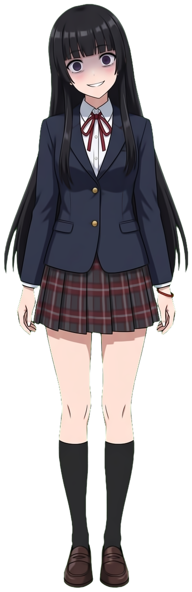

OPEN SOURCE · VISUAL NOVEL ENGINE
交互式文本
基于 Godot 4.7（.NET / C#）+ Web UI 的开源视觉小说引擎
写一份 JSON，其余交给引擎——演出、立绘、音乐、分支、存档，一应俱全。
FEATURES
开箱即用的完整能力
📜JSON 剧情驱动
对话、旁白、选择支、变量、条件跳转，全部用 JSON 描述，零代码写剧本。
🎭完整演出系统
背景淡入淡出、立绘表情交叉淡化、位置移动、BGM 交叉淡入、音效与语音。
🌿分支与多结局
choice 选择支 + set/if 变量条件，轻松实现多路线多结局结构。
💾存档 / 读档
多存档位 + 场景自动存档，舞台与音频快照完整复现演出现场。
🖥️Web UI 界面层
WebView 渲染的毛玻璃 UI：打字机、历史回顾、设置、鉴赏、右键菜单。
🤖AI 制作管线
内置 godot-vn-creator 技能：AI 生成立绘背景、自动配乐、一键验证。
ARCHITECTURE
三层架构，一目了然
story/*.json
剧情脚本
characters + scenes + commands
➜
引擎层 C#
VNCore 主控制器
CommandRunner 指令执行
GameState 状态 / 存档
➜
渲染层
Stage：原生背景与立绘
WebView：透明叠加 Web UI
AudioManager：三条音频总线
C# 与 JS 通过 JSON 消息双向通信：引擎只管状态与舞台，界面全部交给 Web 前端——换皮、改主题不动一行 C#。
QUICK START · 1/3
第一步：写一段剧情
// story/main.json
{
"characters": { "mio": { "displayName": "澪", "color": "#c0392b" } },
"scenes": {
"start": { "commands": [
{ "cmd": "bg", "asset": "street_dusk", "fade": 1.0 },
{ "cmd": "bgm", "action": "play", "track": "daily" },
{ "cmd": "show", "character": "mio", "emotion": "smile" },
{ "cmd": "say", "character": "mio", "text": "明天见哦，透君。" }
] }
}
}
QUICK START · 2/3
第二步：按约定放素材
assets/
├─ backgrounds/ street_dusk.png ← bg 指令按文件名引用
├─ characters/mio/ smile.png ← 角色id/表情名.png
├─ bgm/ daily.ogg ← 支持 ogg / mp3 / wav
└─ se/ heartbeat.wav ← 音效
没有素材？用内置的 godot-vn-creator 技能：剧本大纲 → AI 生成立绘与背景 → itch.io 免版税配乐 → 自动构建验证，一条流水线直达成品。
QUICK START · 3/3
第三步：构建并运行
01安装 .NET 8 SDK 与 Godot 4.7 .NET 版Windows 需 WebView2 Runtime（Win10/11 通常自带）
02dotnet build 编译 C# 脚本等价于 Godot 编辑器中的 Build
03用 Godot 编辑器打开项目，运行主场景开场 PV → 标题画面 → 开始游戏
BRANCHING
选择支 × 变量 = 多结局
{ "cmd": "choice", "options": [
{ "text": "「我不会逃。」", "target": "path_understand" },
{ "text": "「别靠近我。」", "target": "path_reject" } ] },
{ "cmd": "set", "name": "path", "value": "accept" },
// 结局分流：条件不满足则跳过下一条指令
{ "cmd": "if", "name": "path", "op": "==", "value": "accept" },
{ "cmd": "jump", "target": "ending_redline" }
玩家的每个选择沉淀为变量，变量决定命运——示例 Demo《红线缠心》用这套结构实现了 4 条结局线。

OFFICIAL DEMO
示例 Demo
《红线缠心》
病娇 × 微恐怖 · 28 场景 · 4 结局
约 1.5 小时流程，全部素材由 AI 管线生成。
立绘 16 张 · 背景 14 张 · BGM 6 首
从空白到可玩成品，仅用一次流水线。
REPOSITORY
仓库分支说明
基座master
桌面端引擎基座。干净的引擎 + Web UI，拿来即写你自己的故事。
基座master_Android
Android 端引擎基座。同一套剧情 JSON，移动端直接运行。
示例yandere
示例 Demo《红线缠心》完整内容：剧本、AI 素材、配乐与署名文件。
Fork 之后从 master 出发；不确定能做成什么样，就切到 yandere 看看答案。
写下你的故事
交互式文本 · Godot Visual Novel Engine
引擎本体以 MIT License 开源。
演示页 BGM：「chill guitar」— D-Wheat Music（itch.io，免费可用于个人与商业用途）。
Demo 配乐另见 assets/bgm/CREDITS.md（Vacuous BGM / YUKARINOTI，署名后免费使用）。
Demo 美术素材由 AI（gemini-nano-banana-2.1）生成，仅供学习参考。